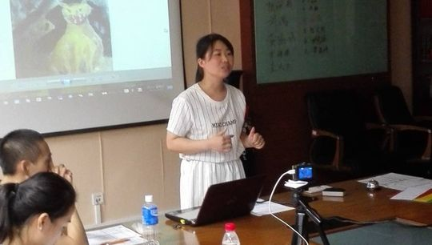
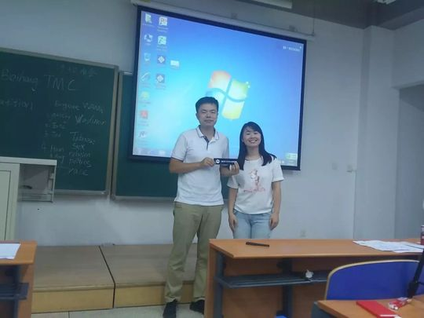

Sarah
Sarah是北航Toastmasters里一位身份特别的会员——她自称"女工程师""女程序员"（female technician / female programmer），却在头马的舞台上展现出与代码截然不同的温度。2016年初她已是俱乐部活跃成员，在128次会议担任即兴主持，130次会议献上关于虚拟现实(VR)的CC2，从一名理工女的视角讲述前沿科技。此后她的备稿演讲节奏惊人地快：从CC3的情商修炼、CC4"有志者事竟成"、CC5梦中采访英国首相卡梅伦谈脱欧，到CC6中文演讲《致被家伤过的人们》、CC7《我想嫁的男人》，几乎一两周一篇，纪要里同伴都感叹"sarah的cc进展得好快"。
她的演讲常被形容为"自制心灵鸡汤"与"motivation speech"——内容真切、流利，传递积极向上的能量。2016年秋，她完成CC9、CC10《Attitude Matters》，主题始终围绕"态度决定一切"，鼓励大家戒掉懈怠与悲观。2017年她更进一步，在176次会议奉上进阶手册的AC1《Lessons from being a leader》，开始思考"领导力"这一更深的命题；同年秋季演讲比赛，她以英文演讲《What do we live for》登台，探讨人生的价值。
除了演讲者，Sarah也是俱乐部的主持人与组织者。她多次担任Toastmaster(如152次"Competition"、136次"Right or Wrong")，做过即兴主持(TTM)，会议预告里还留着她的联系电话，是新人加入头马的窗口之一。纪要中她爱跑步、性格开朗("可爱的Sarah""what a lovely smile")，在2016秋季比赛中分享自己相亲(blind-date)的趣事，把生活的点滴化作舞台上的故事。她是那种把工程师的严谨与对生活的热爱一起带上讲台的头马人。
里程碑
- 2016-03-18 担任即兴主持TTM ↗在128次会议主持'Real-time'即兴话题，已是活跃成员。
- 2016-03-25 工程师的CC2 ↗以女程序员视角讲VR，确立'理工女+励志'的演讲风格。
- 2016-05-06 首次主持会议 ↗担任136次'Right or Wrong'会议Toastmaster，并留联系电话。
- 2016-07-08 中文演讲CC6 ↗在中文联合会议献上《致被家伤过的人们》，展现治愈系一面。
- 2016-11-18 完成CC10 ↗以《Attitude Matters》收官能力沟通手册第十篇。
- 2017-06-09 迈入AC进阶 ↗在176次会议带来AC1《Lessons from being a leader》。
- 2017-09-01 登上比赛舞台 ↗在秋季演讲比赛以英文演讲《What do we live for》参赛。
闯关之路 · Competent Communication
做过的演讲 · 10 场
担任过的会议角色
为俱乐部做的事
- 多次担任Toastmaster主持与即兴主持，组织并串联会议流程。
- 作为会议联系人(留有手机号)，是新会员与来宾加入北航头马的对接窗口之一。
- 持续高频输出备稿演讲，从CC2到CC10再到AC，为俱乐部树立坚持成长的榜样。
- 兼顾中英文演讲与即兴环节，丰富了俱乐部的内容多样性。
- 代表俱乐部参加秋季演讲比赛，为北航头马争取荣誉。
头马里的人
照片墙 · 时间线
 ✓
✓ ✓
✓ ✓
✓ ✓
✓
✓
✓ ✓
✓ ✓
✓


完整足迹 · 23 次出现（点开，每条可跳转原文）
- 2016-03-17第128次 · 担任128次会议即兴演讲主持
- 2016-03-24第130次 · 做CC2演讲《Will Virtual Reality Be Popular in the Future?》
- 2016-04-21第134次 · 做CC3备稿演讲《How to promote your EQ?》
- 2016-05-05第136次 · 担任第136次会议的Toastmaster(会议主持)
- 2016-05-06第136次 · 担任136届会议主持，撰写主题引言，留联系电话
- 2016-05-14第136次 · 担任136届会议主持
- 2016-05-17第137次 · 与Flyer即兴双人演讲
- 2016-06-02第140次 · 预告CC4演讲《Nothing is impossible to a willing mind》
- 2016-06-05第140次 · 做演讲分享有志者事竟成的心灵鸡汤
- 2016-06-14第141次 · 与Joshua组CP，获即兴第三名
- 2016-06-20第142次 · 撰写142届会议纪要，报道换届
- 2016-07-01第143次 · 做CC5采访英国首相主题演讲
- 2016-07-04第143次 · 做CC5梦中采访英国首相卡梅伦谈脱欧
- 2016-07-08做CC6演讲致被家伤过的人们
- 2016-07-29第147次 · Superpower@BeihangTMC 147th Meeting 19:3
- 2016-09-05BeiHang Autumn Contest Report
- 2016-09-08第152次 · Competition@BeihangTMC 152nd Meeting 19:
- 2016-10-20第156次 · R.M.B.@Beihang TMC 156th Meeting@19:30 O
- 2016-11-17第159次 · Movies@Beihang TMC 159th Meeting@19:30 N
- 2016-11-22第159次 · Movies @minutes of 北航 TMC 159rd Meeting
- 2017-05-14第173次 · Persistence@BeiHangTMC 173rd Meeting Min
- 2017-06-08第176次 · Root of Exhaustion@BeihangTMC 176th Meet
- 2017-09-01BeiHang TMC 2017 Fall speech contest